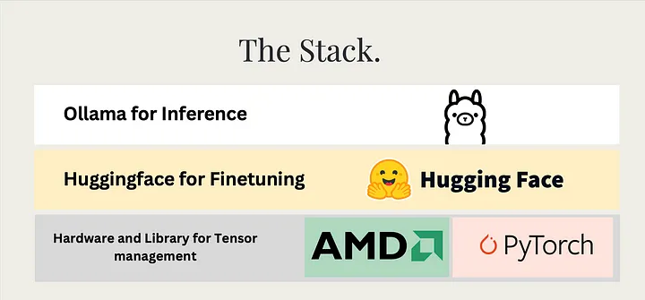
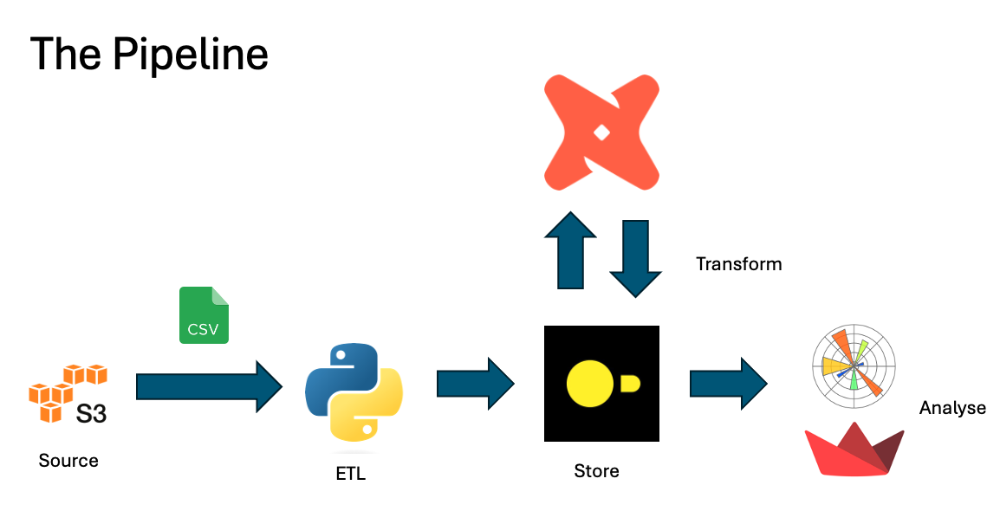
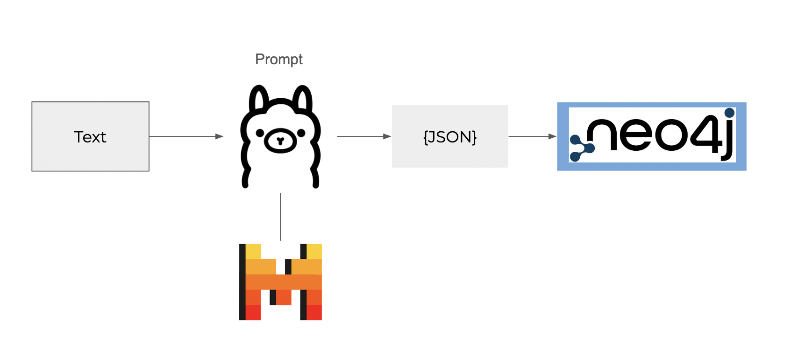
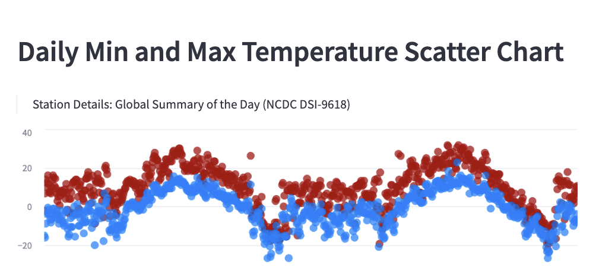

AI & Data Engineer
Hi, I'm Raajas Sode.
I build AI-oriented software with data quality as the focal point. Over the past few years I've worked with startups across marketing, finance, fashion and even hardware. This site is a small window into the kind of work I do.
I spent 2024 building startups.
After quitting my job as a Data Engineer in late November 2023, I dove head first into building startups with nothing but grit and knowledge gained from dealing with high-stakes projects. Starting in March 2024, I began understanding requirements, clients and the market — a full year that was a whirlwind of learning new frameworks, reading papers, understanding technologies and talking to like-minded people building on their passion. After that year-long sprint of anything but conventional work experience, I found myself in a position of autonomy, something surreal I'd never experienced before.
Working on baremetal AI servers, writing AI agents, and building seamless frontends for chatbots — it all feels like a dream. The time I didn't spend coding, I spent sharing ideas on AI, games and large language models.


Writing
From the blog

Building Games for Fun
Started pursuing the art of building games my 10 year old self would fawn over.

Training Large Language Models with an AMD GPU
I've spent quite some time working on machines with AMD GPUs to build frameworks and APIs around AI training.

Data Modelling with dbt and DuckDB
Creating OLAP data models and dashboards locally using DuckDB and dbt.

Exploring Agentic Workflows with Langgraph and Neo4j
Building an agent that maps relationships between ideas in text into a knowledge graph, using Langgraph and Neo4j.
Projects
Featured Projects
Tapspace — Buildspace Demo Day
A hackathon project I designed, built, and shipped end-to-end during a Buildspace cohort demo day — actually completed and launched, unlike most of my side experiments.
View the live demo day project →
Climatology Dashboard
An interactive climate-data dashboard exploring historical weather trends and visualization design.
Read how I built it →Experience
Where I've worked
I'm an AI Engineer with 5+ years of experience leveraging data and generative AI to design and implement impactful solutions, most recently in investment banking. I specialize in building and optimizing ETL pipelines, fine-tuning large language models, and automating workflows to drive high-quality, data-driven insights — with a strong emphasis on operational efficiency and scalable AI/data engineering practices.
Senior Technology Associate - Data & AI
Morgan Stanley · June 2025 – Present
- Developing data infrastructure and semantic models that Generative AI models use as extensive context outside of reporting.
- Built a data quality matrix across business components for better visibility into data quality and accuracy, using dbt models, tests, and pre/post hooks to establish clean error lineage.
- Developed multi-agent systems for parsing and analyzing massive text documents at scale.
- Led design and development of ETL pipelines and data models supporting stakeholder reporting and analytics, automating ingestion and validation with Python.
- Architected and optimized Snowflake ETL pipelines using secure SQL — efficient DDLs, stored procedures, and stepwise, incrementally-loaded transformations.
- Delivered firm-wide training on integrating Agentic AI and GitHub Copilot into workflows, driving adoption of AI-powered automation.
AI Engineer
Independent Consultant · March 2024 – June 2025
- Independently designed and developed full-stack generative AI applications in startup environments, managing the full model lifecycle from training through deployment.
- Fine-tuned, evaluated, and deployed client-facing LLMs using open-source frameworks such as LangChain, LlamaIndex, and Hugging Face.
- Created Python and Bash automation scripts for deployment, monitoring, and scaling of AI models and infrastructure.
- Engineered GPU-accelerated training and inference pipelines optimized for performance and cost-efficiency.
- Developed domain-specific retrieval-augmented generation (RAG) systems to improve relevance and accuracy of LLM outputs.
- Built inference and prompt engineering frameworks aligned with ISO quality standards.
Analytics Engineer
Resonance Companies · September 2022 – November 2023
- Extensive use of dbt for data modeling and transformation within Snowflake.
- Developed machine learning models in Python for tasks such as predicting product defects.
- Designed Snowflake-based data models and pipelines as the central finance data warehouse, supporting accurate revenue and expense reporting.
- Optimized ETL workflows — DDLs, stored procedures, and transformation scripts — for secure, incrementally-loaded, performant data processing.
- Developed automated CI/CD pipelines leveraging Docker, Kubernetes, and Argo CD to deploy and scale data solutions.
- Created Looker dashboards for finance stakeholders, aligning reporting metrics to business objectives.
Data Engineer
Penpath LLC · August 2021 – September 2022
- Created data warehousing infrastructure and pipelines leveraging Snowflake to deliver marketing analysis and drive client sales.
- Extensive dbt model development for data transformation and analysis within Snowflake.
- Managed and maintained Tableau dashboards for data visualization and reporting.
- Developed Markov chain models in Python for multi-touch attribution marketing, extracting channel-specific revenue impacts.
- Developed data integration pipelines for Python-based machine learning algorithms.
Software Engineer
LetsCooee · July 2020 – August 2021
- Designed and deployed end-to-end mobile applications using Flutter, with web-based APIs using Node.js, Mongoose, and MongoDB.
- Built and deployed templates for HTML-based games for clients.
Resources
Things that helped me learn
Data Engineering & MLOps
AI & LLMs
Side Quests
What I do for fun
Outside of data and AI, I like tinkering with game dev and augmented reality — small, unfinished experiments built purely for the joy of making something interactive.
 Ghostbusters AR
Ghostbusters AR